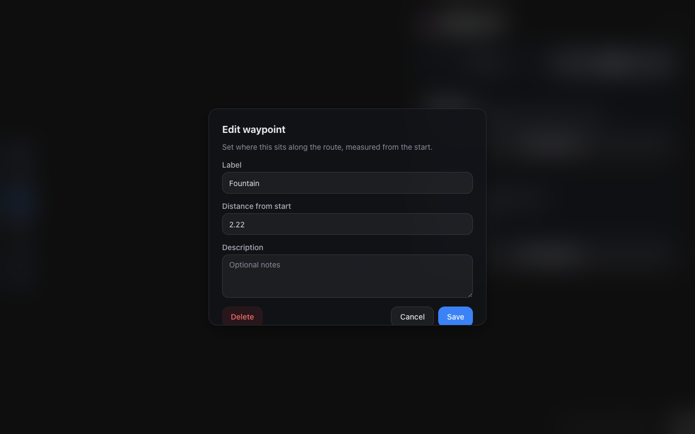
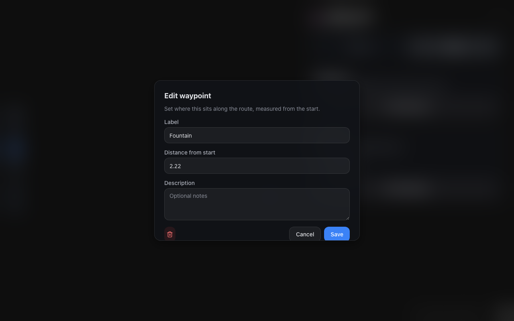
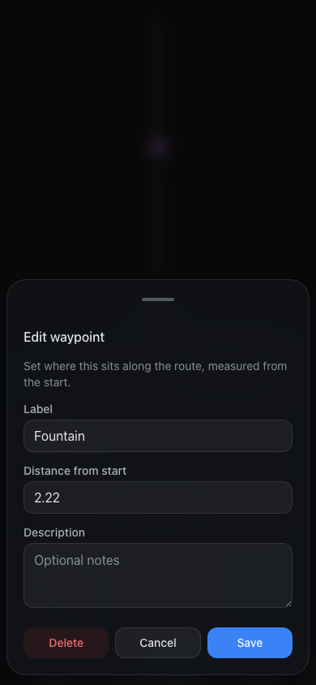
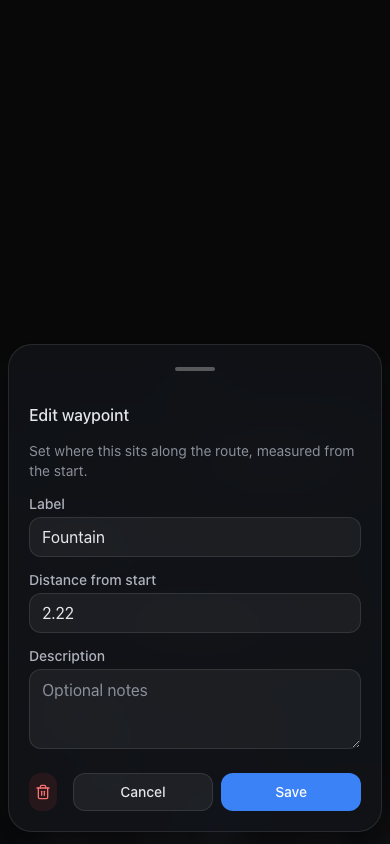
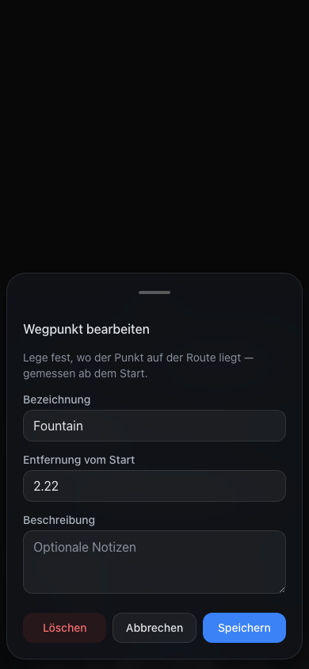
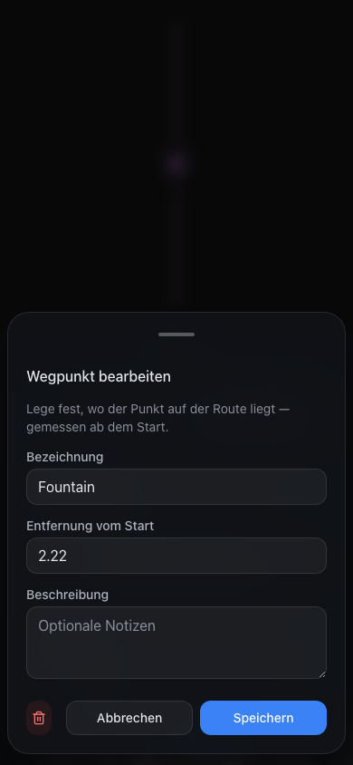

C1Delete as an icon, wider gap to Cancel · Save
In edit mode Delete is a danger icon button (trash, accessible name
"Delete") at every width. On phone it sits left with 16 px to Cancel, against 8 px
between Cancel and Save; on desktop it stays far left (Q1, Q2). The footer rule in
apps/web/CLAUDE.md:45 now allows it in a three-action footer.
apps/web/src/features/studio/markers/StudioMarkerDialog.tsx:203,
:208, :210; apps/web/CLAUDE.md:45.
Desktop · 1280 × 800 · edit waypointdrag to compare


BeforeAfterPhone · 390 × 844 · EN


Phone · 390 × 844 · DE

